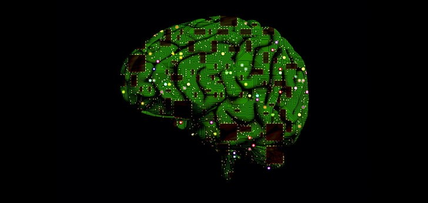
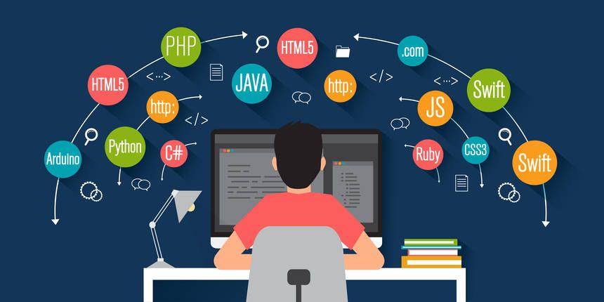

I still remember the day I decided to take a leap of faith and change my career from marketing to front-end web development.
Anxiety had been my constant companion for years in the marketing world, and I knew it was time for a change. I've always been fascinated by the power of technology, and the idea of creating visually stunning and functional websites intrigued me.
As I embarked on my journey, I was filled with a mix of excitement and fear. I knew the road ahead would be challenging, but I was determined to break free from the shackles of anxiety and forge a new path. I started by enrolling in an online course, immersing myself in the world of HTML, CSS, and JavaScript. I quickly realized that coding was a form of meditation for me, allowing me to enter a state of flow where anxiety and stress melted away.
As I progressed through my studies, I began to build a portfolio of projects that showcased my growing skills. I found solace in the online developer community, where I connected with like-minded individuals who were supportive and encouraging. My newfound passion for front-end development helped me rediscover a sense of purpose and direction that had been missing from my marketing career.
In time, I started applying for jobs and attending networking events. The thought of interviews and presenting my work initially filled me with dread, but I was determined to overcome my anxiety. I practiced mindfulness techniques and reminded myself of my accomplishments and the hard work I had put into my new career. Slowly but surely, my confidence grew.

As the technology landscape continues to evolve at an unprecedented pace, artificial intelligence (AI) is poised to play a transformative role in the future of web development. Industry experts agree that the fusion of AI with web development will result in smarter, more efficient, and user-friendly websites. Here, we delve into several key areas where AI is expected to make a significant impact in the coming years.
Personalization: AI-driven algorithms can analyze user behavior and preferences, enabling web developers to create more personalized experiences. With AI, websites can dynamically adapt to individual users, offering tailored content, layout, and even design elements. Experts predict that AI will lead to an era of hyper-personalization, as seen in the success of platforms like Netflix and Spotify (source: Forbes).
Chatbots and Virtual Assistants: AI-powered chatbots and virtual assistants are becoming increasingly sophisticated, providing users with instant support and answers to their queries. As Natural Language Processing (NLP) technology continues to advance, these AI tools will offer more human-like interactions, revolutionizing customer service and engagement on websites (source: Gartner).
Accessibility: AI has the potential to significantly improve web accessibility for users with disabilities. By incorporating AI-driven features like image recognition, speech recognition, and predictive text, web developers can create more inclusive and user-friendly websites, ensuring that the digital world is accessible to all (source: W3C).
Automation in Web Development: AI can help streamline and automate various aspects of web development, from design to testing. For instance, AI-driven design tools can generate responsive layouts and color schemes based on user preferences, while AI-powered testing tools can quickly identify and fix bugs and performance issues (source: TechRepublic).
SEO Optimization: AI algorithms are set to revolutionize search engine optimization (SEO). With AI-powered tools like Google's RankBrain, search engines can better understand user intent and serve more relevant results. Web developers will need to adapt to these changes, incorporating AI-driven SEO strategies to stay ahead in the competitive digital landscape (source: Search Engine Journal).
In conclusion, the future of web development is inextricably linked to the ongoing advancements in AI. By embracing AI-driven tools and strategies, web developers can create smarter, more efficient, and user-centric websites, paving the way for a new era of innovation in the digital world.

As the digital landscape continues to evolve, front-end web developers must stay ahead of the curve to remain relevant and competitive in the job market. In 2023, several key skills are expected to be in high demand for front-end web developers. Here's a rundown of some of the most sought-after skills:
1. Proficiency in core web technologies: A strong foundation in HTML, CSS, and JavaScript remains crucial for front-end developers. With the release of HTML6 and CSS4 on the horizon, staying up-to-date with the latest developments in these core technologies is essential for building modern, responsive, and user-friendly websites.
2. Familiarity with popular JavaScript frameworks and libraries: React, Angular, and Vue.js continue to dominate the front-end development landscape. Mastering at least one of these frameworks is a must-have skill for developers looking to create scalable and high-performing web applications.
3. Responsive and mobile-first design: With mobile devices accounting for an increasing share of web traffic, developers need to be adept at creating responsive and mobile-first designs. Understanding the principles of responsive design and being proficient in CSS frameworks like Bootstrap or Tailwind CSS is highly valuable.
4. Web performance optimization: Ensuring fast-loading and efficient websites is more important than ever. Developers should be well-versed in performance optimization techniques, such as lazy loading, code splitting, and using Content Delivery Networks (CDNs). Familiarity with web performance tools like Lighthouse and WebPageTest is a plus.
5. Web accessibility: Creating inclusive and accessible websites is a growing priority for businesses and organizations. Developers should be knowledgeable about accessibility standards, such as the Web Content Accessibility Guidelines (WCAG), and adept at using accessibility testing tools like Axe or WAVE.
6. Version control and collaboration: Proficiency in using version control systems like Git is essential for efficient collaboration within development teams. Developers should also be comfortable working with project management tools like Jira or Trello to keep projects organized and on track.
7. Soft skills: Beyond technical expertise, soft skills such as effective communication, problem-solving, and adaptability are highly sought after in front-end developers. The ability to work well in a team and communicate with stakeholders is crucial for the success of any web development project.
In summary, front-end web developers in 2023 should focus on refining their core skills, staying up-to-date with the latest frameworks and libraries, and honing their soft skills to stay competitive in the ever-evolving tech industry.